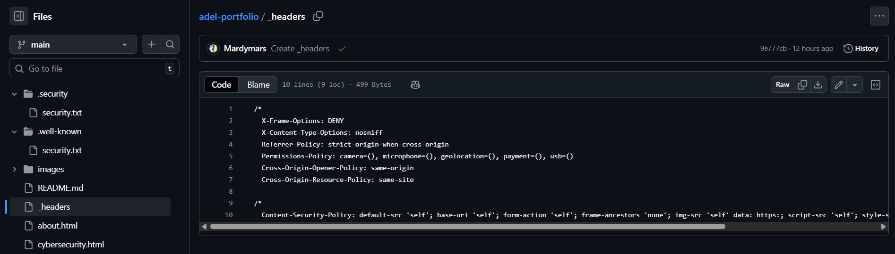
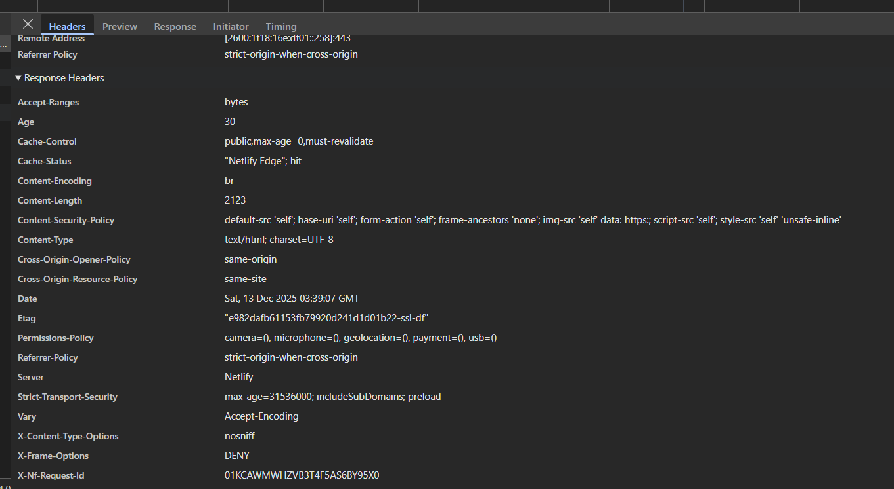

I prioritize fundamentals-first security, focusing on secure configuration, safe deployment practices,
and measurable attack surface reduction through practical, documented work.
The artifacts below demonstrate implementation and validation of real security controls on a live deployment.
What I Apply
Least-privilege access and defense-in-depth principles
Threat awareness, including XSS, clickjacking, and configuration-driven risks
Secure static-site deployment using GitHub + Netlify
Security headers: implement, verify, and maintain
Clear troubleshooting, documentation, and change tracking
Artifacts
These artifacts show both configuration and verification, ensuring controls are not only defined but actively enforced.
I implemented baseline hardening headers and a Content Security Policy (CSP) to reduce common web risks such as
clickjacking, MIME sniffing, excessive browser permissions, and script injection exposure.

Configuration proof: headers and CSP defined in Netlify _headers.
Clickjacking mitigation through frame restrictions
MIME-type sniffing protection
Permissions-Policy hardening
COOP and CORP controls to reduce cross-origin exposure
After deployment, I validated the live HTTPS response in DevTools to confirm the intended headers were
actually being served in production and not just present in source.

Validation proof: headers observed in the live production response.
Confirms HTTPS enforcement and HSTS in production
Confirms CSP is delivered by the platform
Confirms frame protections and permissions hardening
I executed a baseline vulnerability scan of a Windows 11 host using Nessus Essentials, reviewed identified findings,
and documented remediation steps and validation outcomes.